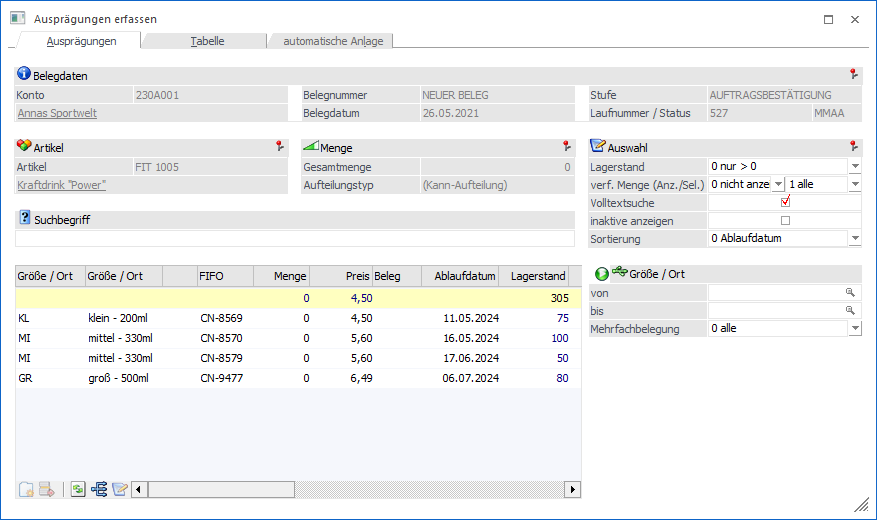
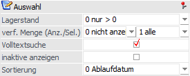
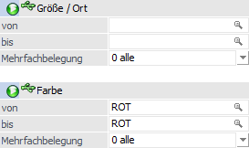
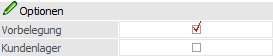
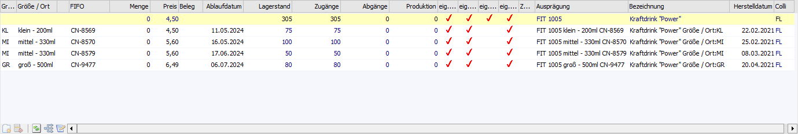
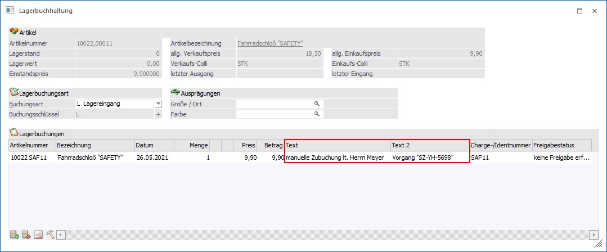
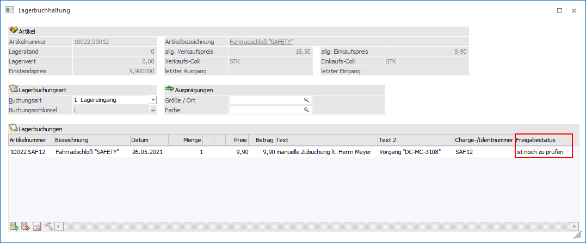

In dem Register "Ausprägungen" (erweiterte Ansicht) werden die Ausprägungen des Hauptartikels tabellarisch untereinander aufgeführt.
Hinweis
Die erweiterte Ansicht muss zunächst über den Button "erweiterte Ansicht" aktiviert werden.

Belegdaten (nur in Belegerfassung)

Wenn das Fenster "Ausprägungen erfassen" in der Belegerfassung geöffnet wird, so steht der Bereich "Belegdaten" zur Verfügung. Dort werden die relevanten Informationen, bezogen auf den aktuellen Beleg, dargestellt.
Artikel

An dieser Stelle wird der auszuprägende Hauptartikel mit Nummer und Bezeichnung angezeigt.
Menge

Ø Gesamtmenge / noch aufzuteilen / Restmenge
Abhängig vom Ausgangprogramm und dem Status der Erfassung wird hier die aktuell erfasste Gesamtmenge, die noch aufzuteilende Menge oder die Restmenge (WinLine PPS) ausgewiesen.
Ø Aufteilungstyp
An dieser Stelle wird der Aufteilungstyp dargestellt (Kann- oder Muss-Aufteilung), wobei die Grundeinstellung in den Aufteilungsoptionen (WinLine FAKT - Stammdaten - Ausprägungen - Aufteilungsoptionen) getroffen wird.
Auswahl

In diesem Bereich kann definiert werden, welche Informationen bzw. Ausprägungen grundsätzlich angezeigt werden sollen.
Ø Lagerstand
Durch die Auswahl "Lagerstand" können die darzustellenden Ausprägungen aufgrund des aktuellen Lagerstandes beeinflusst werden. Folgende Einstellungen stehen zur Auswahl:
ü 0 - nur > 0
Es werden nur
Zeilen mit einem Lagerstand größer Null angezeigt.
ü 1 - alle
Es werden alle Zeilen
angezeigt.
ü 2 - nur = 0
Es werden nur
Zeilen angezeigt, bei denen der Lagerstand Null ist.
ü 3 - nur <> 0
Es werden
nur Zeilen angezeigt, bei denen der Lagerstand größer oder kleiner Null ist.
Ø verf. Menge (Anzeige)
An dieser Stelle kann definiert werden, ob und wie die aktuell verfügbare Menge dargestellt werden soll:
ü 0 - nicht anzeigen
Die
verfügbare Menge wird nicht angezeigt.
ü 1 - anzeigen
Durch die
Aktivierung dieser Option wird eine Spalte mit der errechneten verfügbaren Menge
angezeigt.
ü 2 - inkl. Beleginfo
anzeigen
Zusätzlich zur verfügbaren Mengen (siehe auch Auswahl "1 -
anzeigen") wird die Spalte "Beleginfo" dargestellt. In dieser erfolgt die
Ausweisung jenes Auftrags (Verkauf oder Produktion), welcher die
Bestandsveränderung auslösen wird.
Ø verf. Menge (Selektion)
An dieser Stelle kann definiert werden, welche Ausprägungen, abhängig von der verfügbaren Menge, angezeigt werden sollen. Folgende Einstellungen stehen zur Auswahl:
ü 0 - nur > 0
Es werden nur
Zeilen mit einer verfügbaren Menge größer Null angezeigt.
ü 1 - alle
Es werden alle Zeilen
angezeigt.
ü 2 - nur = 0
Es werden nur
Zeilen angezeigt, bei denen die verfügbare Menge Null ist.
ü 3 - nur <> 0
Es werden
nur Zeilen angezeigt, bei denen die verfügbare Menge größer oder kleiner Null
ist.
Ø Volltextsuche
Standardmäßig erfolgt die Suche linksbündig. Durch Aktivierung der Option "Volltextsuche" wird der Suchbegriff innerhalb des gesamten Wertes gesucht.
Ø inaktive anzeigen
Durch Aktivierung dieser Option werden auch inaktive Ausprägungen in der Ausprägungstabelle angezeigt.
Ø Sortierung
Handelt es sich bei dem Ausprägungsartikel um einen Artikel mit LIFO- bzw. FIFO-Verfahren, dann steht zusätzlich die Funktion der Sortierung zur Verfügung. Über diese kann eingestellt werden, ob nach dem Ablaufdatum oder dem Eingangsdatum sortiert werden soll.
Hinweis
Ob aufsteigend oder absteigend sortiert werden soll ergibt die aus der Art des Verfahrens.
ü Ablaufdatum
ü LIFO-Verfahren
Der Artikel, mit
dem spätesten Ablaufdatum wird zuerst vorgeschlagen.
ü FIFO-Verfahren
Der Artikel, mit
dem frühesten Ablaufdatum wird zuerst vorgeschlagen
ü Eingangsdatum
ü LIFO-Verfahren
Der zuletzt
zugebuchte Artikel wird an erster Stelle vorgeschlagen.
ü FIFO-Verfahren
Der zuerst
zugebuchte Artikel wird an erster Stelle vorgeschlagen.
Suchbegriff

Ø Suchbegriff
An dieser Stelle kann durch die Eingabe eines Suchbegriffs nach Ausprägungen gesucht werden, wobei der Suchbereich die Artikelnummer, die Artikelbezeichnung, die Chargen- und die Identnummer umfasst.
Hinweis
Im Gegensatz zu der "normalen Ansicht" wird die Suche erst ausgelöst, sobald der eingegebene Suchbegriff mit Enter bestätigt wird. Außerdem ist eine Zwischenspeicherung nicht möglich, d.h. durch Anwahl des Buttons "Ok" bzw. der Taste F5 schließt sich das Fenster "Ausprägungen erfassen" und alle bis dahin getätigten Eingaben werden direkt übernommen.
Ausprägungsselektion

In dem Bereich "Ausprägungsselektion", welcher über den Button "Ausprägung 1" oder "Ausprägung 2" geöffnet wird, können weitere Selektionen bzw. Einstellungen für die Anzeige der Ausprägungen vorgenommen werden.
Ø Ausprägung 1 (hier: "Größe / Ort") / Ausprägung 2 (hier: "Farbe")
Wenn der Hauptartikel mit Ausprägung 1 und / oder Ausprägung 2 geführt wird, dann kann an dieser Stelle eine Selektion auf die anzuzeigenden Ausprägungen vorgenommen werden.
Hinweis
Durch Anwahl des Buttons kann der Selektionsbereich geschlossen werden.
Ø Mehrfachbelegung
An dieser Stelle kann entschieden werden, welche Ausprägungen bei der Verwendung von Mehrfachbelegungen angezeigt werden sollen:
ü 0 - alle
ü 1 - nur belegte Ausprägungen
ü 2 - nur nicht belegte Ausprägungen
Optionen (nur in Belegerfassung)

Ø Vorbelegung
Wenn mit einer Vorbelegung der Ausprägungen gearbeitet wird (lt. Belegart oder durch einen manuellen Eintrag im Register "Zusatz" der Belegerfassung) und in der Belegerfassung der Button "Ausprägungsoptionen" auf "Aufteilungsfenster öffnen (Ausprägungen übernehmen)" gestellt ist, dann kann an dieser Stelle durch Aktivierung des Buttons die Vorbelegung in dem Selektionsbereich wiederhergestellt werden.
Ø Kundenlager
Durch Aktivierung dieser Option werden Ausprägungen mit einer Hinterlegung im Feld "Fremdlager / Konto" (WinLine FAKT - Stammdaten - Ausprägungen - Ausprägungen verwalten) nur dann berücksichtigt / angezeigt, wenn das dort hinterlegte Konto dem aktuellen Konto entspricht.
Tabelle "Ausprägungen"

In der Ausprägungstabelle werden alle Ausprägungen gemäß den definierten Einstellungen bzw. Selektionen angezeigt. Hierbei werden im Standard alle Spalten, bis auf "Rabatt1" und "Rabatt2", angezeigt.
Hinweis
Spalten können jederzeit über das Kontextmenü der rechten Maustaste (Funktion "Spalten anzeigen / verstecken") hinzugefügt bzw. entfernt werden.
Ø Ausprägung 1 / Ausprägung 2 / Chargennummer / Identnummer
In diesen Spalten wird die Ausprägungskurzbezeichnung (auch "Kurzcode" oder "Kennzahl" genannt) samt Bezeichnung der Ausprägung bzw. die entsprechende Nummer (bei Chargen- und Identnummernartikeln) angezeigt.
Ø Mehrfachbelegung
Wenn eine Ausprägung von einem Artikel bereits belegt ist, dann wird auf dieses durch das Symbol hingewiesen.
Ø Menge
An dieser Stelle wird die benötigte Menge hinterlegt.
Hinweis
Bei "inaktiven" oder nicht "freigegebenen" (Zahl "0" wird in Rot dargestellt) Ausprägungen ist eine Mengeneingabe nicht möglich.
Hinweis 2
Folgende Punkte werden bei der Eingabe der Menge geprüft:
ü Belegerfassung
ü Liefersperre (lt. Einstellung in den Belegoptionen)
ü Verfügbare Menge in der Stufe "2 - Auftrag" (lt. Einstellung in der Belegart)
ü Lagerstandsunterschreitung ab der Stufe "3 - Lieferschein" (lt. Einstellung in der Belegart)
ü Allgemein
ü Mehrfachausprägung erlaubt (lt. Einstellung im Artikelstamm)
ü Menge bei Identnummernartikeln darf nur "1" oder "-1" betragen
ü Lagerstand bei Identnummernartikeln darf nach der Buchung nur "1", "0" oder "-1" betragen
Ø Preis (nur in Belegerfassung)
In diesem Feld wird der Preis der Ausprägung angezeigt.
Hinweis
Bezüglich der Preisanzeige und der Preisfindung beachten Sie bitte die Buttons "Preisfindung" und "Preisanzeige".
Ø Beleg (nur in Belegerfassung)
An dieser Stelle kann bei der Verwendung des Buttons "Liefereingänge zuweisen" eine Zuweisung auf den Einkaufsbeleg erfolgen (nähere Informationen entnehmen Sie bitte dem Kapitel Ausprägungen erfassen - Sonderfunktionen in der Belegerfassung).
Ø Ablaufdatum
An dieser Stelle wird das Ablaufdatum der Charge angezeigt bzw. bei einer Neuanlage hinterlegt.
Ø Lagerstand
In dieser Spalte wird der aktuelle Lagerstand ausgewiesen.
Ø verf. Menge
An dieser Stelle wird die errechnet verfügbare Menge angezeigt.
Hinweis
Je nach Programm, über welches in das "Ausprägungen erfassen" gewechselt wurde, wird zur Berechnung der verfügbaren Menge ein anderes Datum genutzt:
ü Belegerfassung: Lieferdatum aus dem Register "Mitte" der Belegerfassung"
ü Kundenbestellungen bearbeiten: Lieferdatum aus dem Register "Mitte" der Belegerfassung"
ü Lieferantenlieferungen aufteilen: Lieferdatum aus dem Register "Mitte" der Belegerfassung"
ü Inventur, Lagerbuchhaltung: Aktuelles Tagesdatum
ü Produktionskorrektur: Produktionsdatum
ü Produktionsendmeldung: Produktionsdatum
Ø Beleginfo
Wurde die Option "2 - inkl. Beleginfo anzeigen" bei der Einstellung "verf. Menge (Anzeige)" gewählt, so wird in dieser Spalte jener Auftrag (Verkauf oder Produktion) ausgewiesen, welcher die Bestandsveränderung auslösen wird.
Hinweis
Sollten mehrere Aufträge für die zukünftige Bestandsveränderung verantwortlich sein, so wird anstatt einer Auftragsnummer der Hinweis <Aufträge> dargestellt. Durch Anwahl dieser Info wird die Artikelbedarfsvorschau geöffnet.
Ø Zugänge / Abgänge / Produktion
In diesen Spalten werden die Bewegungswerte der Ausprägung angezeigt.
Ø eig. Preis / eig. Lager / eig. Text / eig. Zusatz
In diesen Spalten wird durch ein angezeigt, ob die Ausprägung einen eigenen Preisstamm, einen eigenen Lagerstamm, einen eigenen Textstamm und / oder einen eigenen Zusatzfelderstamm besitzt.
Hinweis
Bei der Neuanlage einer Ausprägung kann hier definiert werden, ob ein eigener Stamm gebildet werden soll oder ob auf den Stamm des Hauptartikels verwiesen werden soll.
Ø Zusatzfelder übernehmen
Bei der Neuanlage einer Ausprägung mit eigenem Zusatzfelderstamm kann an dieser Stelle entschieden werden, ob die Zusatzfeldinhalte von dem Hauptartikel übernommen werden sollen.
Ø Ausprägung / Bezeichnung
In diesen Spalten werden die Artikelnummer und die Artikelbezeichnung der Ausprägung angezeigt.
Ø Buchungstext 1 / Buchungstext 2 (nur Lagerbuchhaltung)
In diesen Feldern kann ein Buchungstext für die Lagerbuchung erfasst werden. Sollte eine Texteingabe laut Lagerbuchungsart nicht erlaubt sein, dann wird das Feld "Buchungstext 1" und / oder "Buchungstext 2" nicht angezeigt.
Beispiel
Es wurde über das Fenster "Ausprägungen erfassen" eine neue Ausprägung (Identnummer) angelegt und dabei ein "Buchungstext 1" und "Buchungstext 2" vergeben.

Ø Freigabestatus (nur Lagerbuchhaltung)
An dieser Stelle wird der Freigabestatus einer Ausprägung angezeigt. Bei der Neuanlage kann hier der gewünschte Status gesetzt werden.
Hinweis
Bei einer neuangelegten Ausprägung wird der gewählte Status in der Folge in die Lagerbuchhaltungszeile übernommen.

Ø Liefersperre (nur in Belegerfassung)
Es wird mittels Symbol angezeigt, ob es sich um eine Ausprägung mit Liefersperre (gültig bzw. aufgehoben) handelt.
ü - Gültige Liefersperre
Es handelt es
sich um eine Ausprägung mit einer gültigen Liefersperre.
Hinweis
Per rechter Maustaste (Option "Liefersperre aufheben (xxxx)") kann die Liefersperre aufgehoben bzw. wieder aktiviert werden.
ü  - Aufgehobene Liefersperre
- Aufgehobene Liefersperre
Es handelt es
sich um einen Artikel mit einer aufgehobenen Liefersperre.
Hinweis
Per rechter Maustaste (Option "Liefersperre setzen (xxxx)") kann die Liefersperre wieder aktiviert werden.
Ø Poolnummer (nur in WinLine PPS)
In diesem Feld kann die "Poolnummer" des Produktionsauftrags hinterlegt werden (nähere Informationen entnehmen Sie bitte dem Kapitel "Ausprägungspool - Stammdaten").
Ø Herstelldatum
An dieser Stelle wird das Herstelldatum der Charge angezeigt bzw. bei einer Neuanlage hinterlegt.
Ø Colli
An dieser Stelle wird der Colli des Artikels dargestellt und kann geändert werden.
Tabellenbuttons

Ø Neuanlage
Nach dem Drücken des Buttons "Neuanlage" wird in eine leere Ausprägungszeile gewechselt und es kann eine neue Ausprägung erfasst werden.
Hinweis
Der Button ist nicht anwählbar wenn eine Neuanlage laut der verwendeten Vorlage nicht gestattet wird.
Achtung
Um eine neue Ausprägung zu erfassen, muss die Ausprägungskurzbezeichnung (auch "Kurzcode" oder "Kennzahl" genannt) für Ausprägung 1 und / oder Ausprägung 2 als Spalte in der Tabelle zur Verfügung stehen, wenn solche Ausprägungen erfasst werden sollen.
ü Ausprägung existiert im
"Ausprägungen verwalten" noch nicht
Wenn eine Ausprägungskurzbezeichnung
verwendet wird, welche im "Ausprägungen verwalten" (WinLine FAKT - Stammdaten -
Ausprägungen - Ausprägungen verwalten) noch nicht angelegt wurde, dann erscheint
folgende Meldung:
Durch
die Anwahl "Ja" wird automatisch das Programm "Ausprägungen verwalten" geöffnet,
in welchem die neue Ausprägung angelegt werden kann.
ü Ausprägung liegt nicht im
definierten Ausprägungsbereich des Hauptartikels
Wenn eine
Ausprägungskurzbezeichnung gewählt wird, welche im "Ausprägungen verwalten"
existiert, aber außerhalb des definierten Ausprägungsbereichs vom Hauptartikel
liegt, dann erscheint folgende Meldung:
Durch die Anwahl "Ja" wird der
definierte Bereich bei dem Hauptartikel erweitert.
Ø Zeile entfernen
Der Button "Zeile entfernen" steht nur für neue Ausprägungszeilen zur Verfügung und löscht die gerade markierte Zeile heraus.
Ø Menge automatisch füllen (nur in Belegerfassung und WinLine PPS)
Mittels dieses Buttons ist es möglich, eine aufzuteilende Menge automatisch aufteilen zu lassen (nähere Informationen entnehmen Sie bitte dem Kapitel Ausprägungen erfassen - Sonderfunktionen in der Belegerfassung).
Ø Liefereingänge zuweisen (nur in Belegerfassung)
Bei Eingangsbelegen (Lieferantenlieferschein und -faktura) besteht die Möglichkeit die Liefermenge nur auf den Hauptartikel zu buchen. Im Zuge des Verkaufes kann mit Hilfe des Buttons "Liefereingänge zuweisen" auf diese Zubuchungen verwiesen werden sobald neue Ausprägungen angelegt werden (nähere Informationen entnehmen Sie bitte dem Kapitel Ausprägungen erfassen - Sonderfunktionen in der Belegerfassung).
Ø Inaktivflag zurücksetzen
Mit dem Button "Inaktivflag zurücksetzen" können inaktive Chargen- und Identnummernartikel wieder aktiviert werden. Dementsprechend steht die Funktion nur zur Verfügung, wenn…
ü im Fenster "Ausprägungen erfassen" Chargen- oder Identnummernartikel angezeigt werden und
ü die Option "inaktive anzeigen" in der verwendeten Vorlage aktiviert ist.
Bei der Anwahl des Buttons erscheint folgende Meldung:

ü aktuelle Identnr. / aktuelle
Charge
Es wird nur die aktuell angewählte Charge / Identnummer wieder
aktiviert.
ü Alle
Es werden alle Chargen /
Identnummern des Artikels wieder aktiviert.
ü Abbrechen
Es wird keine Charge
/ Identnummer aktiviert.